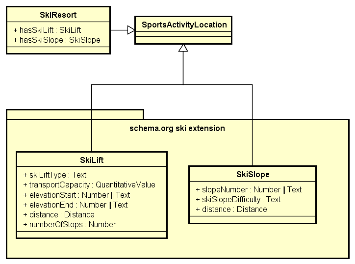

Markup for SkiResort, SkiLift and SkiSlope
Author: Elias Kärle, Daniel Ackstaller and Jonas Stock
This page provides background information on the use of schema.org for marking up ski resorts, ski lifts and ski slopes. For feature requests, please use the Github repository.
Overview
When modeling ski resort related information on the web with schema.org, there are three core objetcs:
- A ski resort, which is an area dedicated for skiing and accessed by skiing infrastructure.
- A ski lift, which is the means of transport which takes people to the top of a mountain or the top of a skiing slope.
- A ski slope, which is the area where people with ski or snowboards can practice their winter sport.
Basic Model
The diagram shown below illustrates the basic pattern for describing ski lifts and ski slopes within a ski resort and shows the newly added parameters and classes.
A ski resort is a sports location as well as ski lift and ski slope. The ski resort class only adds two new properties, hasLift which points to one or more ski lifts and hasSlope, which points to one or more ski slopes.
Minimal Example
In the example below we see a very simple annotation of a ski resort with one ski lift and three ski slopes.
1 2 3 4 5 6 7 8 9 10 11 12 13 14 15 16 17 18 19 20 21 22 23 24 25 26 27 28 29 30 | <div itemtype="http://schema.org/SkiResort" itemid="http://www.stanzach.at/familienskilifte.html" itemscope> <meta itemprop="name" content="Familienskilifte Stanzach" /> <link itemprop="sameAs" href="http://www.naturpark-lechtal.at/winter/ski-und-snowboard/ski-und-snowboard.html?aid=55" /> <link itemprop="sameAs" href="http://www.lechtal.at/winter/winter-aktiv-lechtal/skifahrenimlechtal/skigebiete/familienskigebiet-stanzach.html" /> <link itemprop="image" href="http://www.naturpark-lechtal.at/index.php?rex_resize=990c__300h__p1230074.jpg" /> <div itemprop="hasSkiLift" itemtype="http://schema.org/SkiLift" itemscope> <meta itemprop="distance" content="550" /> <meta itemprop="transportCapacity" content="2" /> <meta itemprop="numberOfStops" content="2" /> <meta itemprop="elevationEnd" content="1190" /> <meta itemprop="elevationStart" content="940" /> <meta itemprop="name" content="Stoamandllift" /> <meta itemprop="skiLiftType" content="T-bar lift" /> </div> <div itemprop="hasSkiSlope" itemtype="http://schema.org/SkiSlope" itemscope> <meta itemprop="distance" content="1330" /> <meta itemprop="name" content="Familienabfahrt" /> <meta itemprop="skiSlopeDifficulty" content="blue" /> <meta itemprop="slopeNumber" content="1a" /> </div> <div itemprop="hasSkiSlope" itemtype="http://schema.org/SkiSlope" itemscope> <meta itemprop="distance" content="1820" /> <meta itemprop="name" content="Rennstrecke" /> <meta itemprop="skiSlopeDifficulty" content="red" /> <meta itemprop="slopeNumber" content="1b" /> </div> <div itemprop="hasSkiSlope" itemtype="http://schema.org/SkiSlope" itemscope> <meta itemprop="distance" content="2575" /> <meta itemprop="name" content="Wald Verbindungslift" /> <meta itemprop="skiSlopeDifficulty" content="Skiroute" /> <meta itemprop="slopeNumber" content="2" /> </div> </div> |
See the page for http://schema.org/SkiResort for a complete list of additional properties for describing the ski resort.
Acknowledgments
The idea for that extension was born during on of the OC meetings at the STI Innsbruck. Thanks to all the OC members and Prof. Dieter Fensel for their valuable input and discussion.